Direct on Line Starting Method
Reduced Voltage Method
Stator Resistor Starting Method
Auto Transformer Starting Method
Star-Delta Starting Method
Starting of Wound Rotor Motors
External Resistances in Rotor Circuit
In this article we are going to discuss various methods of starting three phase induction motor. Before we discuss this, it is very essential here to recall the torque slip characteristic of the three phase induction motor which is given below.
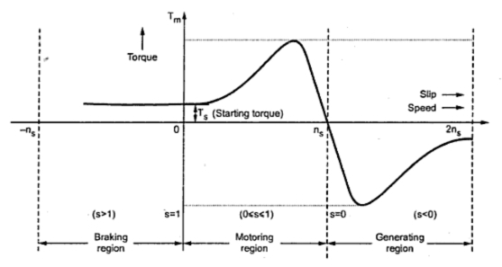
From the torque slip characteristic it is clear that at the slip equals to one we have some positive starting torque hence we can say that the three phase induction motor is self starting machine, then why there is a need of starters for three phase induction motor? The answer is very simple. If we look at the equivalent circuit of the three phase induction motor at the time of starting, we can see the motor behaves like an electrical transformer with short circuited secondary winding, because at the time of starting, the rotor is stationary and the back emf due to the rotation is not developed yet hence the motor draws the high starting current. So the reason of using the starter is clear here. We use starters in order to limit the high starting current. We use different starters for both the type of three phase induction motors. Let us consider first squirrel cage type of induction motor. In order to choose a particular type of starting method for the squirrel cage type of induction motor, we have three main considerations and these are,
(a) A particular type of starter is selected on the basis of power capacity of the power lines.
(b) The type of starter selected on the basis of the size and the design parameters of the motor.
(c) The third consideration is the type of load on the motor (i.e. the load may be heavy or light).
We classify starting methods for squirrel cage induction motor into two types on the basis of voltage. The two types are
(i) Full voltage starting method and
(ii) reduced voltage method for starting squirrel cage induction motor.
Now let us discuss each of these methods in detail.
Full Voltage Starting Method for Squirrel Cage Induction Motor
In this type we have only one method of starting.
Direct on Line Starting Method
This method is also known as the DOL method for starting the three phase squirrel cage induction motor. In this method we directly switch the stator of the three phase squirrel cage induction motor on to the supply mains. The motor at the time of starting draws very high starting current (about 5 to 7 times the full load current) for the very short duration. The amount of current drawn by the motor depends upon its design and size. But such a high value of current does not harm the motor because of rugged construction of the squirrel cage induction motor. Such a high value of current causes sudden undesirable voltage drop in the supply voltage. A live example of this sudden drop of voltage is the dimming of the tube lights and bulbs in our homes at the instant of starting of refrigerator motor. Now let us derive the expression for starting torque in terms of full load torque for the direct online starter. We have various quantities that involved in the expression for the starting torque are written below: We define Ts as starting torque
Tf as full load torque
If as per phase rotor current at full load
Is as per phase rotor current at the time of starting
sf as full load slip
ss as starting slip
R2 as rotor resistance
Ws as synchronous speed of the motor
Now we can directly write the expression for torque of induction motor as
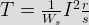
From the help of the above expression we write the ratio of starting torque to full load torque as
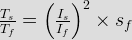
Here we have assumed that the rotor resistance is constant and it does not vary with the frequency of the rotor current.
Reduced voltage method for starting squirrel cage induction motor
In reduced voltage method we have three different type of starting method and these are written below:
(1) Stator resistor starting method
(2) Auto transformer staring method
(3) Star delta starting method
Now let us discuss each of these methods in detail.
Stator Resistor Starting Method
Given below is the figure for the starting resistor method:
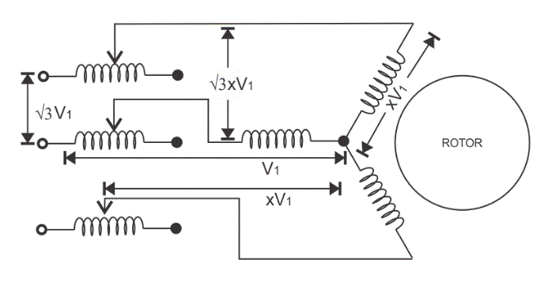
In this method we add resistor or a reactor in each phase as shown in the diagram (between the motor terminal and the supply mains).Thus by adding resistor we can control the supply voltage. Only a fraction of the voltage (x) of the supply voltage is applied at the time of starting of the induction motor. The value of x is always less than one. Due to the drop in the voltage the starting torque also decreases. We will derive the expression for the starting torque in terms of the voltage fraction x in order to show the variation of the starting torque with the value of x. As the motor speeds up the reactor or resistor is cut out from the circuit and finally the resistors are short circuited when the motor reaches to its operating speed. Now let us derive the expression for starting torque in terms of full load torque for the stator resistor starting method. We have various quantities that involved in the expression for the starting torque are written below: we define Ts as starting torque
Tf as full load torque
If as per phase rotor current at full load
Is as per phase rotor current at the time of starting
sf as full load slip
ss as starting slip
R2 as rotor resistance
Ws as synchronous speed of the motor
Now we can directly write the expression for torque of the induction motor as
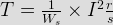
From the help of the above expression we write the ratio of starting torque to full load torque as
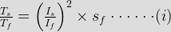
Here we have assumed that the rotor resistance is constant and it does not vary with the frequency of the rotor current. From the above equation we can have the expression for the starting torque in terms of the full load torque. Now at the time of starting the per phase voltage is reduced to xV1, the per phase starting current is also reduced to xIs. On substituting the value of Is as xIs in equation 1. We have
^2\times s_f")
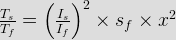
This shows the variation of the starting torque with the value of x. Now there are some considerations regarding this method. If we add series resistor then the energy losses are increased so it’s better to use series reactor in place of resistor because it is more effective in reducing the voltage however series reactor is more costly than the series resistance.
Auto Transformer Starting Method
As the name suggests in this method we connect auto transformer in between the three phase power supply and the induction motor as shown in the given diagram:
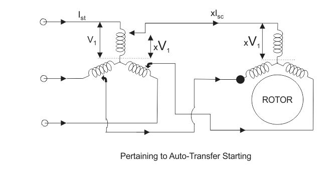
The auto transformer is a step down transformer hence it reduces the per phase supply voltage from V1 to xV1.The reduction in voltage reduces current from Is to xIs. After the motor reaches to its normal operating speed, the autotransformer is disconnected and then full line voltage is applied. Now let us derive the expression for starting torque in terms of full load torque for the auto transformer starting method. We have various quantities that involved in the expression for the starting torque are written below:
We define Ts as starting torque
Tf as full load torque
If as per phase rotor current at full load
Is as per phase rotor current at the time of starting
sf as full load slip
ss as starting slip
R2 as rotor resistance
Ws as synchronous speed of the motor
Now we can directly write the expression for torque of the induction motor as

From the help of the above expression we write the ratio of starting torque to full load torque as
^2\times s_f\cdot\cdot\cdot\cdot\cdot\cdot(i)")
Here we have assumed that the rotor resistance is constant and it does not vary with the frequency of the rotor current. From the above equation we can have the expression for the starting torque in terms of the full load torque. Now at the time of starting the per phase voltage is reduced to xV1, the per phase starting current is also reduced to xIs. On substituting the value of Is as xIs in equation 1. We have
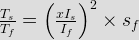
^2\times s_f\times x^2")
This shows the variation of the starting torque with the value of x.
Star-Delta Starting Method
Connection diagram is shown below for star delta method,
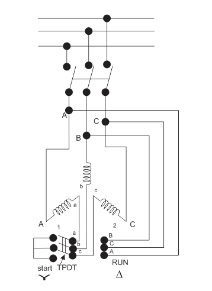
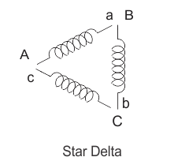
This method is used for the motors designed to operate in delta connected winding. The terminals are marked for the phases of the stator are shown above. Now let us see this method works. The stator phases are first connected to the star by the help of triple pole double throw switch (TPDT switch) in the diagram the position is marked as 1 then after this when the steady state speed is reached the switch is thrown to position 2 as shown in the above diagram.
Now let analyse the working of the above circuit. In the first position the terminals of the motor are short circuited and in the second position from the diagram the terminal a, b and c are respectively connected to B, C and A. Now let us derive the expression for starting torque in terms of full load torque for the star delta starting method. We have various quantities that involved in the expression for the starting torque are written below
Tf as full load torque
Ts as starting torque
If as per phase rotor current at full load
Is as per phase rotor current at the time of starting
sf as full load slip
ss as starting slip
R2 as rotor resistance
Ws as synchronous speed of the motor
Now we can directly write the expression for torque of the induction motor as

From the help of the above expression we write the ratio of starting torque to full load torque as
^2\times s_f\cdot\cdot\cdot\cdot\cdot\cdot(ii)")
Here we have assumed that the rotor resistance is constant and it does not vary with the frequency of the rotor current. Let us assume the line voltage to be Vl then the per phase starting current when connected in star position is Iss which is given by

When stator is in delta connected position we have starting current
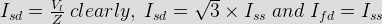
From the above equation we have
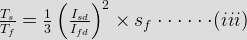
This shows that the reduced voltage method has an advantage of reducing the starting current but the disadvantage is that all these methods of reduced voltage causes the objectionable reduction in the starting torque.
Starting Methods of Wound Rotor Motors
We can employ all the methods that we have discussed for starting of the squirrel cage induction motor in order to start the wound rotor motors. We will discuss the cheapest method of starting the wound rotors motor here.
Addition of External Resistances in Rotor Circuit
This will decrease the starting current, increases the starting torque and also improves the power factor. The circuit diagram is shown below: In the circuit diagram, the three slip rings shown are connected to the rotor terminals of the wound rotor motor. At the time of starting of the motor, the entire external resistance is added in the rotor circuit. Then the external rotor resistance is decreased in steps as the rotor speeds up, however the motor torque remain maximum during the acceleration period of the motor. Under normal condition when the motor develops load torque the external resistance is removed.
After completing this article, we are able to compare induction motor with synchronous motor. Point wise comparison between the induction motor and synchronous motor is written below,
(a) Induction motor always operates at lagging power factor while the synchronous motor can operate at both lagging and leading power factor.
(b) In an induction motor the value of maximum torque is directly proportional to the square of the supply voltage while in case of synchronous machine the maximum torque is directly proportional to the supply voltage.
(c) In an induction motor we can easily control speed while with synchronous motor, in normal condition we cannot control speed of the motor.
(d) Induction motor has inherent self starting torque while the synchronous motor has no inherent self starting torque.
(e) We cannot use induction motor to improve the power factor of the supply system while with the use of synchronous motor we can improve the power factor of the supply system.
(f) It is a singly excited machine means there is no requirement of dc excitation while the synchronous motor is doubly excited motor means there is requirement of separate dc excitation.
(g) In case of induction motor on increasing the load the speed of the motor decreases while with the speed of the synchronous motor remains constant.
 by
by